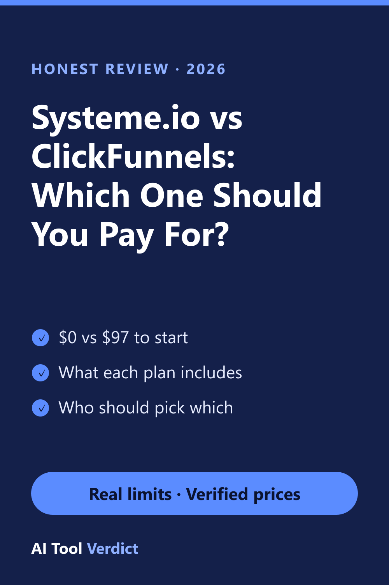

Systeme.io vs ClickFunnels (2026): Which One Should You Pay For?

Disclosure: this post contains affiliate links. If you buy through them, we may earn a commission at no extra cost to you.
Systeme.io and ClickFunnels both promise the same thing: sales funnels, email and online courses in one place, so you do not have to glue five tools together. The difference that decides it for most people is price. Systeme.io has a free plan and paid plans from $17 a month. ClickFunnels starts at $97 a month.
This comparison covers what each one costs, what you get, and who should pick which. We only list prices we could check on each company's official pricing page.
Prices verified on systeme.io/pricing and clickfunnels.com/pricing on November 26, 2026 (monthly billing). Plans change, so confirm before you buy.
Price at a glance
| Systeme.io | ClickFunnels | |
|---|---|---|
| Free option | Free plan, no time limit, no credit card | No free plan; 14-day free trial |
| Entry plan | Startup, $17/month | Launch, $97/month |
| Middle plan | Webinar, $47/month | Scale, $197/month |
| Top monthly plan | Unlimited, $97/month | Optimize, $297/month |
The cheapest ClickFunnels plan costs the same as the most expensive monthly systeme.io plan. That gap is the main reason people compare the two.
What you get on systeme.io
According to its pricing page, systeme.io's free plan includes 2,000 contacts, 3 sales funnels, 1 course, 1 blog, unlimited email sends and 1 custom domain. Paid plans raise those limits: Startup ($17) goes to 5,000 contacts and 10 funnels, and Unlimited ($97) removes the caps on contacts, funnels and courses. Systeme.io also says it charges 0% transaction fees on payments through Stripe or PayPal.
We covered the free plan's real limits in detail here: Is the Systeme.io Free Plan Enough?
What you get on ClickFunnels
ClickFunnels sells three monthly plans (Launch, Scale and Optimize) plus a higher annual tier. It is built around funnel templates, page building and conversion tools, and it has a large community of marketers and training around it. There is no free plan, but there is a 14-day free trial, so you can test it before paying.
Where systeme.io wins
- Cost. You can start at $0 and stay there until a limit actually blocks you. Even the top monthly plan costs what ClickFunnels charges for its entry plan.
- Low risk for beginners. No credit card is needed for the free plan, so trying it costs nothing.
- Email included. Email sends are unlimited on every systeme.io plan, including the free one.
- Simplicity. Fewer options also means less to learn before your first funnel goes live.
Where ClickFunnels wins
- Depth for funnel specialists. ClickFunnels has been built around funnels for years and offers more advanced funnel-building options and templates.
- Ecosystem. There is a large community, training and many agencies and freelancers who already know the platform.
- For teams with budget. If you already sell and a better-converting funnel is worth more than the monthly difference, the extra cost can make sense.
Who should pick systeme.io
- Beginners selling a first course, coaching offer or digital product
- Creators who want to build an email list without paying per subscriber
- Anyone on a tight budget who wants one simple tool instead of five subscriptions
Start on the systeme.io free plan here (no credit card required).
Who should pick ClickFunnels
- Businesses already making sales that want advanced funnel features
- Marketers who rely on the ClickFunnels community, templates and training
- Teams that can comfortably pay $97 to $297 a month for their funnel tool
The bottom line
If you are starting out, systeme.io is the safer first step: it is free to start, and its paid plans cost a fraction of ClickFunnels. If you outgrow it, you will know exactly which features you are missing, and that is the moment to judge whether ClickFunnels is worth the extra money. If you already run a profitable business and want a specialist funnel tool, use the ClickFunnels 14-day trial to compare before committing.
Try systeme.io free and build your first funnel before spending anything.
Sources: systeme.io official pricing page; ClickFunnels official pricing page (both verified November 26, 2026).